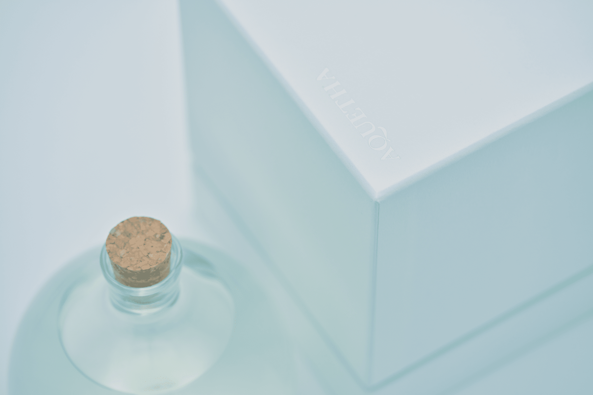

商品ではなく作品を扱う熟成酒ギャラリー
熟成酒は、日本酒の中でもマイナーと言えるジャンルであり、従来の日本酒の文脈に囚われない方法で世の中に対して再提案をする必要がありました。そこで熟成酒を芸術作品として捉えるオンラインギャラリー「北村酒展」の傘と、そこで展示販売される作品群の第一弾として氷温熟成に特徴を持つAQUETHA（アクイータ）を位置づける設計を行いました。その構想に基づき、アーティストが手作業で作成するボトルや、ギャラリーとして機能するWEBサイトなどを企画・開発しました。
これまで熟成酒がアプローチできなかった、洋酒ファンや若年層から好評を受け、既に第二弾以降の作品選定が進行中です。